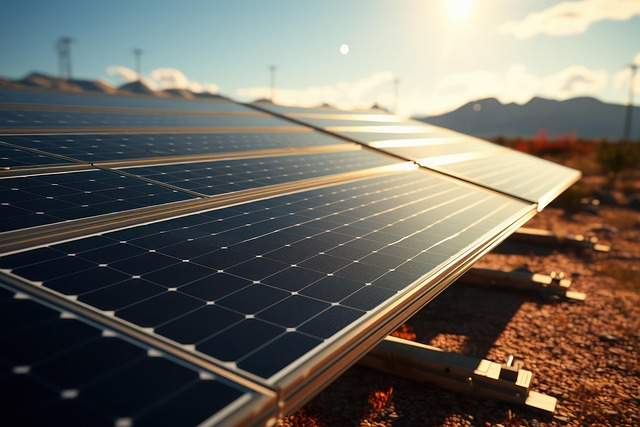

Our World in Data goes over how much electricity AI and the data centers that host it actually use.
Read articleThis article from harvard covers how much water data centers consume.
Read article
Live Science acknowledges that data center water use is a problem, but is optimistic about alternative methods of power.
Read article